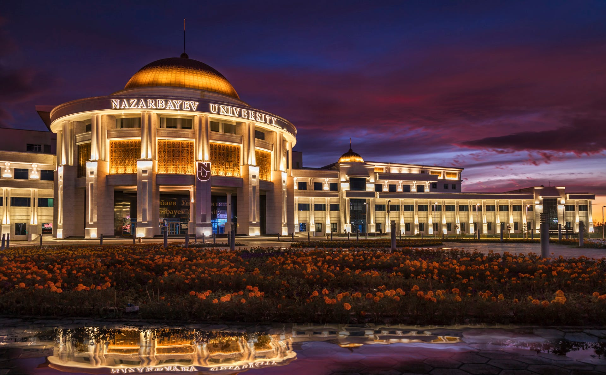

Hi! My name is Gyunel Rashidova and I'm a senior student at Nazarbayev University
My Education

- B.S. in Biological Science
- Coursework: Biology of Cancer, Immunology, Biochemistry, Molecular Cell Biology
Volunteer Projects
Jas Incubation program
Successfully completed an immersive 8-week program focused on acquiring vital skills for startup development and fostering connections within the entrepreneurial community.
OncoSense social project
Through informative social media posts and the organization of events, this project aims to raise awareness among Kazakh women about the importance of breast screening for the early detection of breast cancer.
Professional Projects
NANOPARTICLE CHEMISTRY LABORATORY, NAZARBAYEV UNIVERSITY
Role: Research Assistant
- Synthesized casin-loaded PLGA-PEG nanoparticles and analyzed samples by NMR spectroscopy and TEM.
- Performed Ellman's assay for the quantification of thiol groups in mesoporous silica nanoparticles.
BIOSENSORS AND BIOINSTRUMENTATION LABORATORY, NAZARBAYEV UNIVERSITY
Role: Research Assistant
- Fabricated optical fiber ball resonators by using a laser splicing system (Fujikura LZM-100).
- Investigated concepts about the integration of optical ball resonators into devices to develop portable systems.
- Successfully completed the directed study on the fabrication of optical sensors for the detection of proteins.
- Synthesized the gold nanoparticles to prepare antibody-gold nanoparticle bioconjugates for optical sensors.
NATIONAL CENTER FOR BIOTECHNOLOGY, Kazakhstan
Position: Research assistant intern
- Volunteered at the National Scientific Shared Laboratory of Biotechnology to perform whole blood genomic DNA purification, Cell Culture, Real-time PCR, and Gel Electrophoresis.
SCHOOL OF MEDICINE, STANFORD UNIVERSITY, USA
Position:Research assistant intern
- Analyzed experimental data using GraphPad Prism and ImageJ software to study the effect of varying concentrations of collagen gel on the progression of glioblastoma cells.
- Performed microscope image processing using ZEISS ZEN.
IGEM Competition, Astana, Kazakhstan
Position:Research team member
- Presented the results of the research project at the international iGEM 2021 Giant Jamboree conference.
- Organized Nationwide STEM Summer Camp among high school students in Kazakhstan with over 500+ applicants and 40 guest speakers.